Diseño Visual + UX/UI · Lab 02
Raúl Torres — A01710040
Aplicación: WhatsApp (iPhone)
Funcionalidad: programar un mensaje para que se envíe en una fecha y hora futuras.
La tarea consiste en escribir un mensaje y dejarlo agendado para que salga más tarde, por ejemplo un saludo de cumpleaños a primera hora de la mañana. Al momento de hacer este análisis, la función nativa no estaba disponible en mi aplicación, por lo que un usuario de iPhone tiene que usar la app Atajos.
Recorrido que debe hacer hoy un usuario de iPhone: WhatsApp → Atajos → Automatización → Nueva automatización → Hora del día → Acción de WhatsApp → Contacto y mensaje.
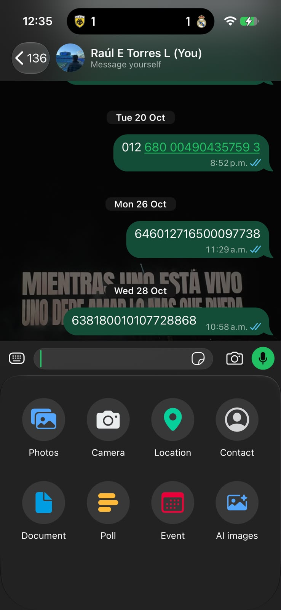
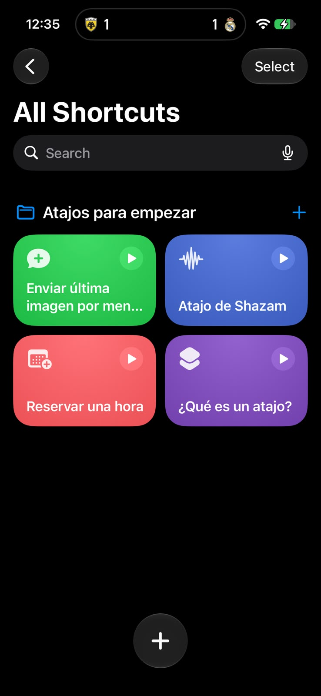
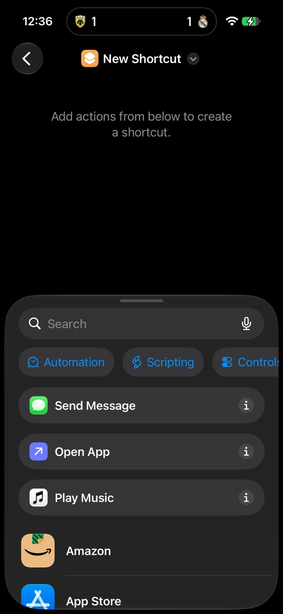
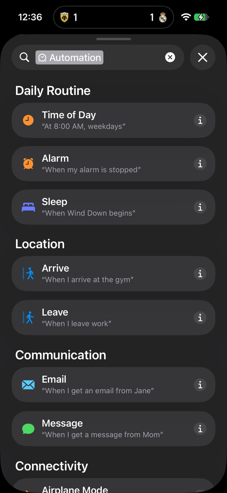
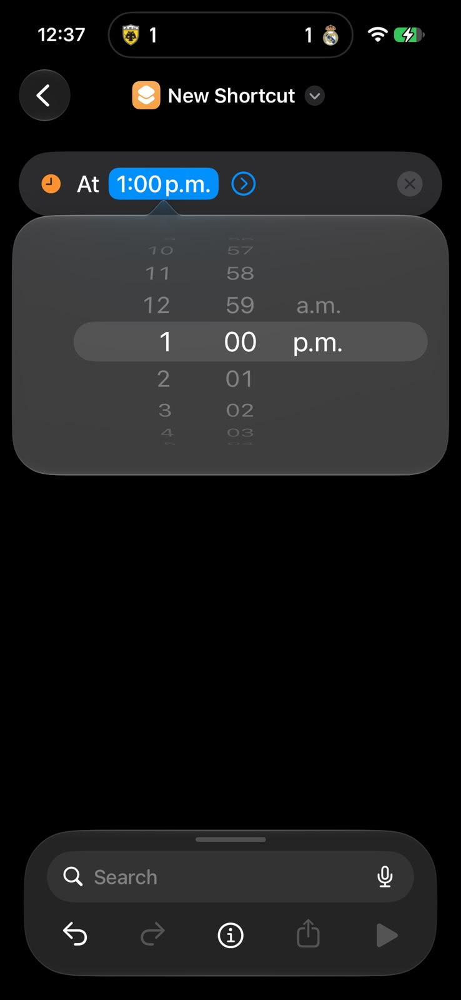
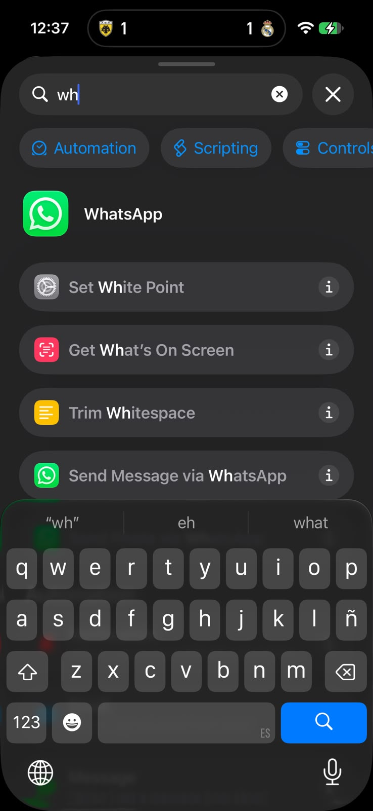
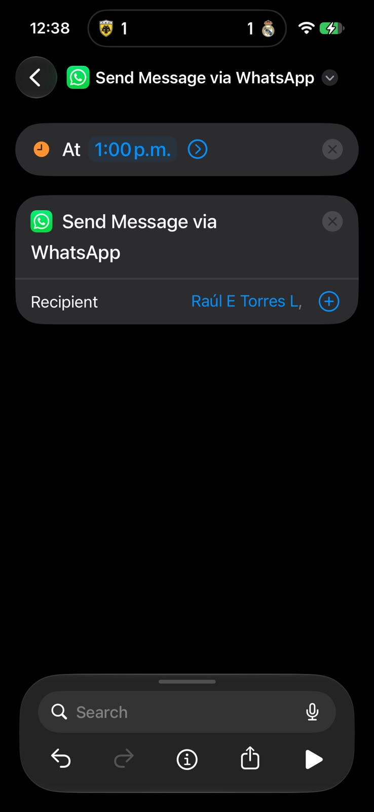
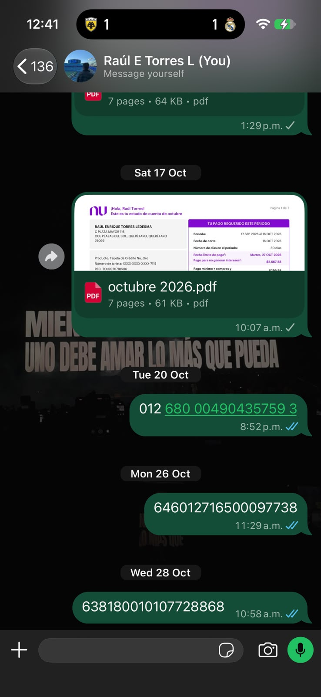
El usuario necesita 7 pasos hasta dejar el mensaje programado y, aun así, tiene que enviarlo manualmente cuando llega la hora.
| Pregunta | Respuesta |
|---|---|
| ¿Cuántos pasos necesita el usuario? | 7 hasta programarlo, más un paso manual al momento del envío. |
| ¿La navegación es clara? | No: el recorrido pasa por otra app y no hay pistas dentro de WhatsApp. |
| ¿Es fácil encontrar la funcionalidad? | No, no es visible ni se sugiere en ningún lugar. |
| ¿Los elementos visuales son fáciles de identificar? | En Atajos hay muchas opciones y la acción de WhatsApp queda escondida entre ellas. |
| ¿Hay momentos de confusión? | Sí, al buscar la acción de WhatsApp y al descubrir que el mensaje no se envía automáticamente. |
Llevar la función al lugar donde el usuario ya está, el chat, con menos pasos, lenguaje cotidiano y retroalimentación clara.
La propuesta integra la función directamente en el chat. El botón de enviar lleva una pequeña insignia de reloj; al mantenerlo presionado aparece «Programar mensaje», se elige la fecha y hora con opciones rápidas, y el mensaje queda visible en la conversación como programado, con opciones para editarlo o cancelarlo.
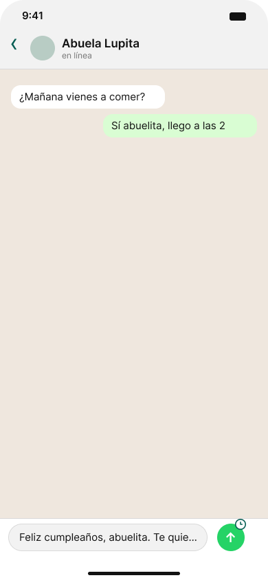
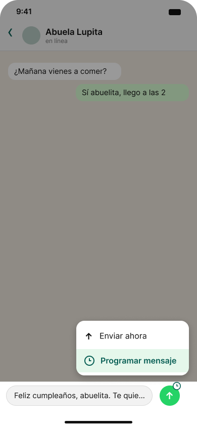
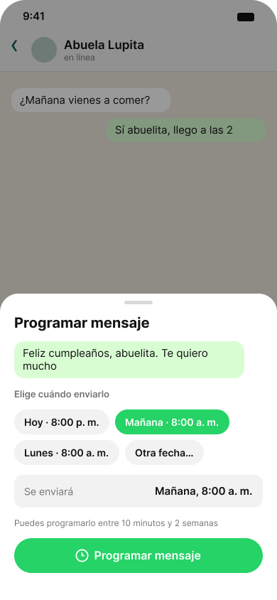
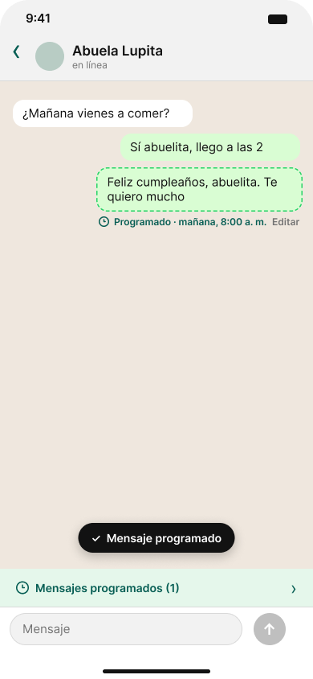
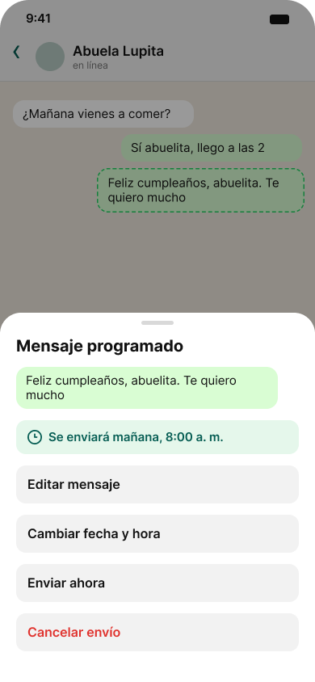
WhatsApp (chat) → Mantener presionado enviar → Programar mensaje → Elegir fecha y hora → Confirmar.
| Experiencia actual | Propuesta | |
|---|---|---|
| Pasos hasta programar | 7 | 4 |
| Dónde ocurre | En otra app (Atajos) | Dentro del chat |
| Envío | Manual al llegar la hora | Automático |
| Retroalimentación | Ninguna en WhatsApp | Aviso, leyenda y banner en el chat |
| Editar o cancelar | No se puede desde el chat | Sí, desde el mismo mensaje |
| Lenguaje | Técnico («automatización», «disparador») | Cotidiano («Se enviará mañana, 8:00 a. m.») |
Mi propuesta parte de un problema concreto: programar un mensaje en WhatsApp hoy exige salir de la app, seguir 7 pasos en un flujo técnico y, al final, enviar el mensaje a mano. El rediseño integra la función en el chat, en 4 pasos, y cada decisión responde a un problema detectado.
Punto de entrada natural. Usé el botón de enviar como acceso, con un pequeño reloj como señal visual. El usuario ya sabe que ese botón envía; al mantenerlo presionado aparece «Programar mensaje» junto a «Enviar ahora». Así resuelvo la falta de descubrimiento sin añadir botones nuevos que saturen la pantalla.
Decisiones rápidas. En lugar de configurar una automatización, ofrezco opciones sugeridas como «Hoy · 8:00 p. m.» o «Mañana · 8:00 a. m.», con la posibilidad de elegir otra fecha. Uso lenguaje cotidiano y muestro el mensaje en la hoja para confirmar qué se va a programar. El botón verde de ancho completo deja clara la acción principal y la jerarquía visual guía la lectura de arriba abajo.
Retroalimentación clara. El mensaje queda en el chat con borde punteado y la leyenda «Programado · mañana, 8:00 a. m.», aparece un aviso de confirmación y un banner indica que hay mensajes programados. El usuario sabe qué quedó agendado y cuándo se enviará.
Control total. Puede editar el mensaje, cambiar la fecha y hora, enviarlo de inmediato o cancelarlo. La acción destructiva, «Cancelar envío», va en rojo y al final de la lista para evitar toques accidentales.
Consistencia. Las cinco pantallas comparten colores, tipografía, estilo de burbujas y el icono del reloj como símbolo de «programado», de modo que el usuario reconoce el concepto en cada paso.
Mejora medible. Se reduce de 7 a 4 pasos, se elimina la salida a otra app y el mensaje se envía automáticamente sin intervención.